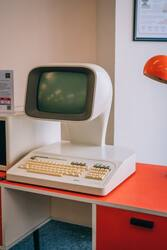
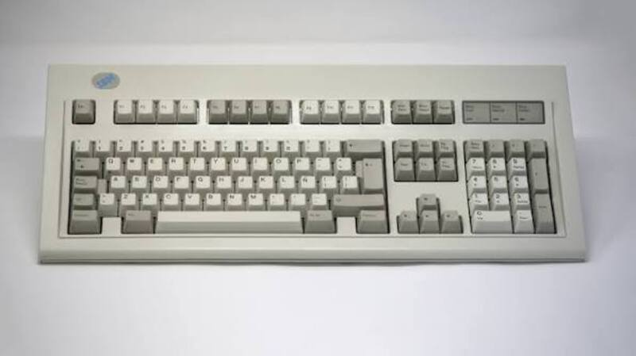

Michael Barnes
My First Repository
Building HTML Lists
- Embedded style sheet
-
A collection of CSS rules defined directly inside a
<style>element within the<head>section of an HTML document. - External style sheet
-
A standalone CSS file containing rules that are linked
to an HTML document using the
<link>element. - Inline style
-
CSS declarations applied directly to an individual
HTML element using the
styleattribute.
Web Development Terms
| Term | Definition |
|---|---|
| Deprecated | A web technology or feature that is no longer recommended for use and may be removed in the future. |
| Responsive design | A web design approach that allows a webpage to adjust its layout and content to different screen sizes and devices. |
| User experience | The overall experience a person has when interacting with a website, including its usability, accessibility, and ease of navigation. |
Working With Images

The PNG and JPG versions display the same retro computer desk image. The PNG format generally preserves more image information, while JPG uses compression to reduce the file size. Depending on the amount of compression, the JPG image may show slight differences in visual quality compared with the PNG version.
